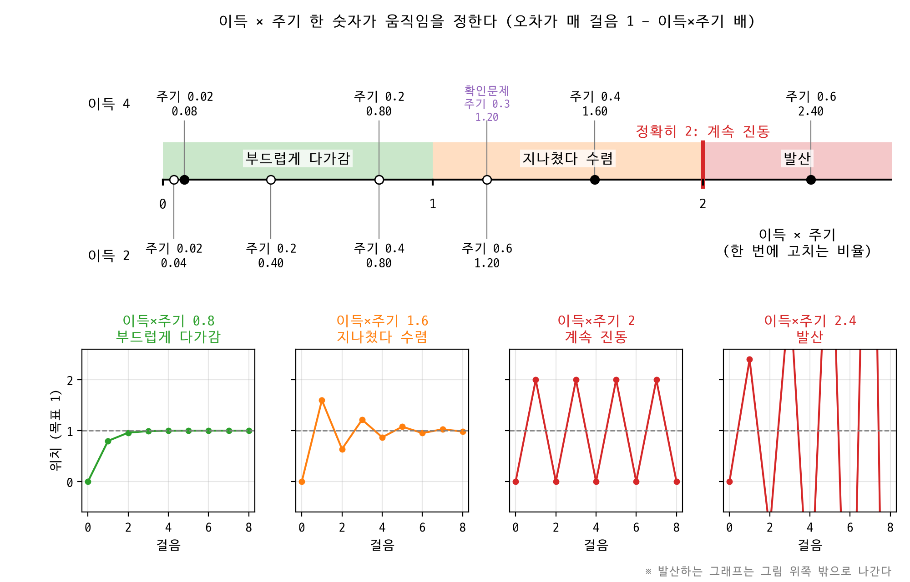
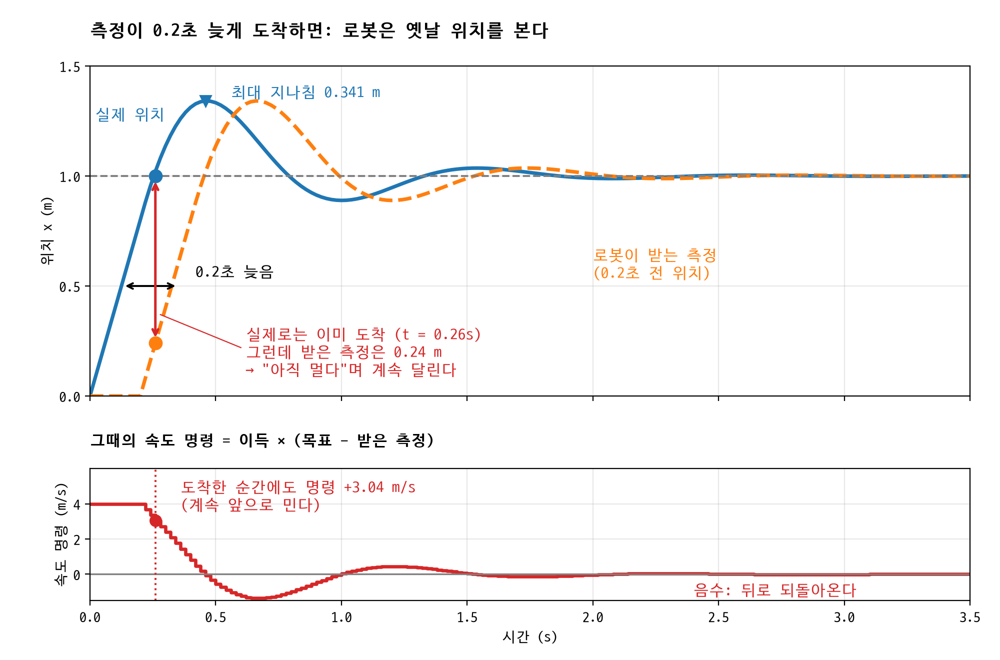

한 번에 너무 멀리 가면 목표를 넘습니다. 얼마나 오래 움직이고 언제 다시 볼지 살펴봅니다.
코드 블록을 내 컴퓨터에서 돌리는 방법은 예제 실행하기에 있습니다.
일은 주기 안에, 기다림은 다음 시각까지
손뼉을 일정하게 치는 사이에 한 줄씩 쓴다고 합시다. 쓰는 시간까지 매번 더 기다리면 박자가 밀립니다. 다음 손뼉의 약속 시각을 먼저 정하고 남은 시간만 쉽니다.
약속한 박자를 유지하는 코드
0.02초마다 한 번 판단하면 1초에 50번, 50Hz입니다. 한 박자 일을 하는 데 0.006초가 들었다면 0.02초를 추가로 쉬는 대신 다음 예정 시각까지 0.014초만 쉽니다. 일을 한 시간까지 매번 덧붙이면 박자가 밀립니다.
다음_박자 = time.perf_counter()
for 박자 in range(10):
# 감지 → 판단 → 행동
다음_박자 += 0.02
남은_시간 = 다음_박자 - time.perf_counter()
if 남은_시간 > 0:
time.sleep(남은_시간)
else:
print("박자를 놓쳤다")perf_counter()는 시간 간격을 재는 시계입니다. 이 코드는 고정 간격을 목표로 할 뿐 일반 OS에서 정확한 실시간성을 보장하지 않습니다. 계산이 주기보다 오래 걸리면 더 빨리 돈다고 선언할 수 없습니다.
01-what-is-a-robot\b12_fixed_rate.py · 읽을 줄 4–16
cd C:\code\src\robo\vol3\01-what-is-a-robot
..\..\.venv\Scripts\python.exe b12_fixed_rate.py10박자에 약 0.2초다음 박자의 시각을 미리 더해 두고(9행) 남은 만큼만 쉽니다(10~12행). 10박자가 0.2초 근처이면 정상입니다. 시계에 따라 0.2 또는 0.3이 나오는 것은 OS의 대기 정밀도 차이입니다.
이 쪽의 그림을 만든 파일(같은 폴더, 실행하면 그림 PNG를 저장): 01-what-is-a-robot\s56_fixed_rate.py
목표 1m로 가는 두 걸음을 손으로 봅니다


0→1.2→0.96m 계산과 수렴 조건
지금은 지연·속도 제한 없는 1차원 점 로봇입니다. 이득 K=4, 주기 Δt=0.3초를 넣으면 첫 명령 4m/s를 0.3초 유지해 x=1.2m, 목표를 0.2m 지납니다. 다음 명령은 4(1−1.2)=−0.8m/s, 이동 −0.24m, 새 위치 0.96m입니다.
e = 목표−x → e다음 = (1−KΔt)e
| KΔt | 오차에 곱하는 수 | 이 단순 모형의 결과 |
|---|---|---|
| 0보다 크고 1 이하 | 0 이상 1 미만 | 지나침 없이 수렴(1이면 한 걸음) |
| 1보다 크고 2 미만 | −1보다 크고 0 미만 | 부호를 바꾸며 수렴 |
| 2 | −1 | 오차 크기가 줄지 않는 진동 |
| 2보다 큼 | −1보다 작음 | 진동이 커짐 |
이 식은 앞 수업의 최대 0.5m/s 제한이나 모터 응답, 센서 지연을 넣지 않았습니다. 실제 로봇의 안전한 이득을 이 숫자 하나로 정하지 않습니다.
01-what-is-a-robot\b13_period.py · 읽을 줄 11–38 · 그림 파일을 저장하므로 임시 폴더에서 돌립니다
cd $env:TEMP
C:\code\src\robo\.venv\Scripts\python.exe C:\code\src\robo\vol3\01-what-is-a-robot\b13_period.py주기 0.02초(한 번에 고치는 비율 0.08): 최대 지나침 0.000m, 끝 오차 0.000m
주기 0.20초(한 번에 고치는 비율 0.80): 최대 지나침 0.000m, 끝 오차 0.000m
주기 0.40초(한 번에 고치는 비율 1.60): 최대 지나침 0.600m, 끝 오차 0.006m
주기 0.60초(한 번에 고치는 비율 2.40): 최대 지나침 10.541m, 끝 오차 10.541m
저장: control_period.png24행이 판단, 25행이 한 주기 이동입니다. 한 번에 고치는 비율 KΔt=0.08/0.80/1.60/2.40에서 지나침이 어떻게 커지는지 보입니다(4초 동안).
이 쪽의 그림을 만든 파일(같은 폴더, 실행하면 그림 PNG를 저장): 01-what-is-a-robot\s20_gain_period.py
현재 위치 대신 옛날 위치를 받으면


센서 지연별 교안의 비교값
로봇이 목표 근처에 왔는데 센서 메시지가 0.4초 전의 “아직 멀다”를 전하면 계속 큰 전진 명령을 냅니다. 목표를 지난 뒤에도 아직 뒤에 있다고 생각할 수 있습니다. 고리를 자주 도는 것과 센서값이 최신인 것은 다른 조건입니다.
b14_delay.py를 돌리면 지연 0초에서 최대 지나침 0, 0.2초에서 0.341m, 0.4초에서 1.650m가 나옵니다(25쪽 실행 블록, 슬라이드와 같은 값). 이 예제 조건의 결과입니다. 지연이 있으면 앞의 0<KΔt<2만 확인해서 안정하다고 결론 내릴 수 없습니다.
01-what-is-a-robot\b14_delay.py · 읽을 줄 3–13
cd C:\code\src\robo\vol3\01-what-is-a-robot
..\..\.venv\Scripts\python.exe b14_delay.py측정이 0.0초 늦으면: 최대 지나침 0.000m, 마지막 1초 동안 흔들림 폭 0.000m
측정이 0.1초 늦으면: 최대 지나침 0.010m, 마지막 1초 동안 흔들림 폭 0.000m
측정이 0.2초 늦으면: 최대 지나침 0.341m, 마지막 1초 동안 흔들림 폭 0.000m
측정이 0.3초 늦으면: 최대 지나침 0.741m, 마지막 1초 동안 흔들림 폭 0.101m
측정이 0.4초 늦으면: 최대 지나침 1.650m, 마지막 1초 동안 흔들림 폭 2.204m측정이 d초 늦게 도착하게 한 줄(8행)만 넣고 0.02초 주기를 그대로 둡니다. 0.3초부터 마지막 1초에도 흔들림이 남습니다.
이 쪽의 그림을 만든 파일(같은 폴더, 실행하면 그림 PNG를 저장): 01-what-is-a-robot\s21_delay.py
따라 하기: 이득만 4에서 2로 낮춥니다
목표·출발점·판단 간격은 두고 한 번에 고치는 세기만 낮춥니다. 같은 0.4초라도 첫 이동이 1.6m에서 0.8m로 줄어드는 예입니다.
이득 하나만 바꾸는 실행 명령
명령과 실제 출력은 이 쪽 아래 “내 컴퓨터에서 돌려 보기”에 있습니다(b13_period.py, b13_period.py --gain 2).
먼저 기본 결과의 0.4초 주기를 봅니다. KΔt=1.6이라 첫 위치 1.6m입니다. 이득 2에서는 같은 주기에 KΔt=0.8, 첫 위치 0.8m입니다. 이 숫자를 보고 난 뒤 두 실행의 최대 지나침을 대조하세요.
이 PC의 결과: 0.4초 주기의 최대 지나침은 이득 4에서 0.600m, 이득 2에서 0.000m이고, 0.6초 주기는 이득 2에서도 0.200m 지나칩니다. control_period.png는 마지막 실행으로 갱신됩니다.
01-what-is-a-robot\b13_period.py --gain 2 · 읽을 줄 12–17 · 그림 파일을 저장하므로 임시 폴더에서 돌립니다
cd $env:TEMP
C:\code\src\robo\.venv\Scripts\python.exe C:\code\src\robo\vol3\01-what-is-a-robot\b13_period.py --gain 2주기 0.02초(한 번에 고치는 비율 0.04): 최대 지나침 0.000m, 끝 오차 0.000m
주기 0.20초(한 번에 고치는 비율 0.40): 최대 지나침 0.000m, 끝 오차 0.000m
주기 0.40초(한 번에 고치는 비율 0.80): 최대 지나침 0.000m, 끝 오차 0.000m
주기 0.60초(한 번에 고치는 비율 1.20): 최대 지나침 0.200m, 끝 오차 0.000m
저장: control_period.png이득만 4에서 2로 내렸습니다. 0.4초 주기는 KΔt=0.8이라 지나침이 사라지고, 0.6초 주기는 KΔt=1.2라 0.2m만 지나친 뒤 돌아옵니다.
0→1.2→0.96을 스스로 한 번 더
목표선을 지났다가 돌아오더라도, 남은 간격이 매번 줄어들면 목표에 가까워집니다. 지나침 한 번과 흔들림이 계속 커짐을 구분하세요.
다음 걸음을 계산해 보기
선택 확인 · 그다음 위치는 얼마인가요?
남은 거리 0.04m, 속도 0.16m/s, 이동 0.048m이므로 1.008m입니다. 오차는 1→−0.2→0.04→−0.008로 −0.2씩 곱해집니다.
값이 잠깐 목표를 넘는 것과 흔들림이 계속 커지는 것은 다릅니다. 여기서는 부호가 번갈아도 오차 크기가 5분의 1이 되어 줄어듭니다.
박자는 모터와 센서에 맞춰 고릅니다
빠르게 다시 판단해도 센서 메모가 오래된 것이면 도움이 제한됩니다. 명령을 유지한 시간과 측정의 나이를 함께 봅니다.
그래서 로봇 안의 고리는 일에 맞는 박자로 따로 돕니다. 안쪽 고리일수록 빠르고, 바깥쪽 고리일수록 느리지만 더 똑똑한 일을 합니다. 경로 계획이 “저쪽으로 가자”고 정하면, 관절 제어가 그 명령을 빠른 박자로 따라가는 식입니다.
| 고리 | 대략적인 빠르기 |
|---|---|
| 모터 전류(힘) 제어 | 수 kHz 이상 |
| 관절 위치·속도 제어 | 수백 Hz ~ 1kHz |
| IMU 읽기, 드론 자세 제어 | 수백 Hz ~ 1kHz |
| 카메라 영상 처리 | 수십 Hz (초당 30장 안팎) |
| 경로 계획, 큰 판단 | 1 ~ 10Hz |
이 표는 교과서가 말하는 흔한 범위이고 이 컴퓨터에서 잰 값이 아닙니다. 이 수업에서 직접 돌려 본 박자는 0.1초(10Hz)와 0.02초(50Hz)입니다. 시뮬레이터의 한 걸음 0.002초는 물리 계산의 간격이라, 제어 박자와는 다른 값입니다.
센서와 모터에 맞는 주기
더 자주 판단하려면 그 안에 측정과 계산을 끝내야 합니다. 이득을 낮추면 어떤 느린 주기에서 안정해질 수 있지만 반응도 느려집니다. 지금 가져갈 기준은 “판단식을 외우기”보다 얼마나 오래 같은 명령을 유지하고, 얼마나 오래된 측정을 쓰는가를 함께 확인하는 습관입니다.
스스로 확인하기
답은 글에서 찾지 않고 예제를 직접 돌리거나 한 줄 바꿔 돌려서 얻습니다. 숫자는 이 컴퓨터에서 나온 값입니다.
수업 근거와 원문 보기
교안·교과서·기존 1일차 필기와 그림을 하나의 설명 흐름으로 재구성했습니다. 아래 쪽수는 PDF 파일의 페이지 순서입니다. 예전 그림 안의 슬라이드 쪽수는 수정 전 교안의 번호일 수 있습니다.
교안: 23쪽, 24쪽, 25쪽, 26쪽, 27쪽, 28쪽
교과서: 30쪽, 31쪽, 32쪽, 33쪽, 34쪽, 35쪽
기존 실습 필기와 파일명·축 약속 교정. 그림과 코드는 기존 학습 폴더의 보관 사본에서 필요한 부분만 재사용했습니다.
재사용 자료: s20_gain_period.png, s21_delay.png, s56_fixed_rate.png, b13_period.py

이 글의 출력 숫자는 이 컴퓨터(MuJoCo 3.17.0, 파이썬 3.12.3)에서 예제를 직접 돌린 값입니다. 그림은 해당 s## 파일이 그린 것입니다. 본문의 손계산 예는 조건을 함께 적었습니다.